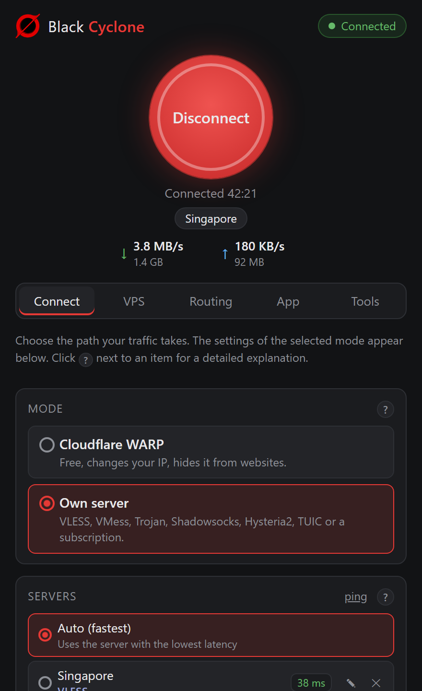
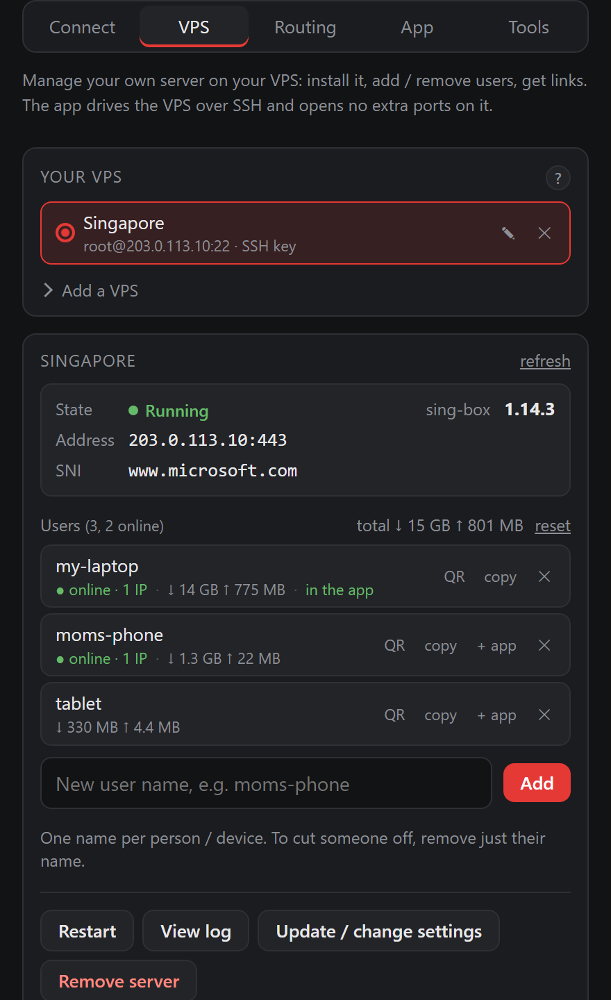
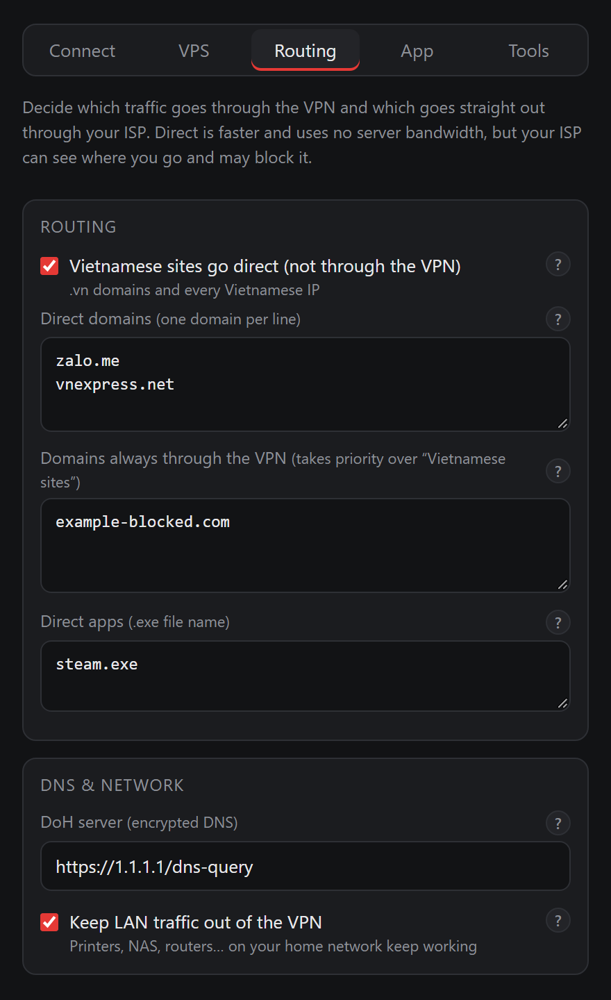
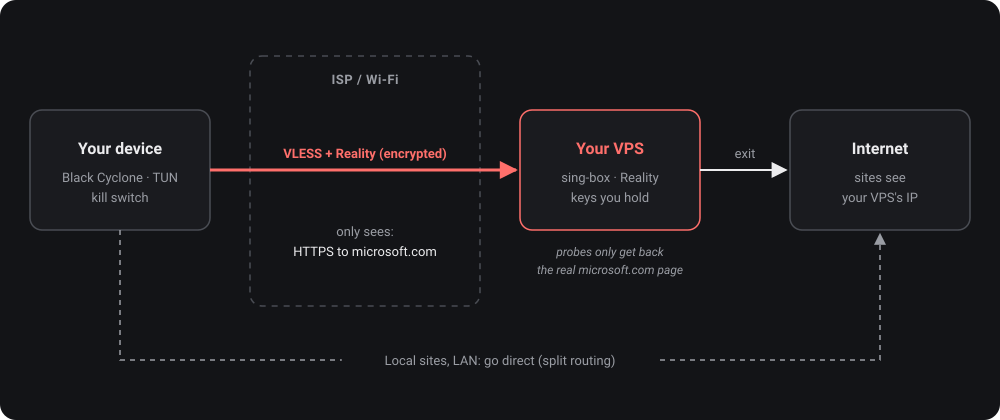
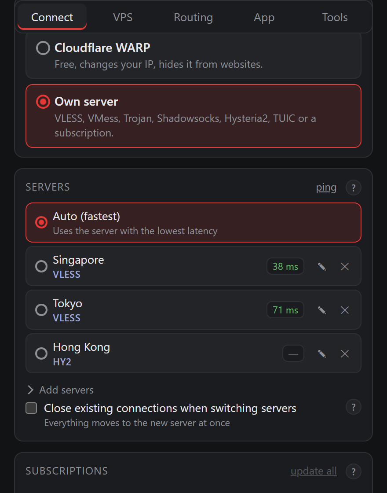

The server is yours
Rent a VPS from any provider you like and install the server from the app. Reality keys are generated on the VPS and readable only by root.
Open source · MIT / GPL-3.0
Black Cyclone turns a cheap VPS into your own private server, right from the app, in a few clicks. No VPN company in the middle, nobody else keeping logs. You hold the keys and stay in full control.



Own your data
A regular VPN asks you to believe they keep no logs. Black Cyclone lets you run the infrastructure yourself, so there is no third party left to trust.
Rent a VPS from any provider you like and install the server from the app. Reality keys are generated on the VPS and readable only by root.
The app connects straight from your device to your VPS. No accounts, no telemetry, no project server in between.
Anyone can read the whole app, the server setup script and the sing-box config. Every downloaded binary is checked against its SHA-256.
If the core stops, the kill switch blocks all traffic so your real IP never leaks. Settings on your device are encrypted.
How it works
The cheapest plan is enough (1 vCPU, 512 MB RAM) running Ubuntu or Debian. Pick a location close to you for low latency.
In the VPS tab, enter your VPS's IP and password and click Install. The app installs sing-box with VLESS + Reality, enables BBR, opens the firewall and creates your link. Prefer the terminal? Run:
$ server/deploy.sh root@203.0.113.10Open Black Cyclone, choose Own server and paste the link. Your ISP sees only an ordinary HTTPS connection.

Server management
No SSH sessions, no commands to remember. The app logs in over SSH to do the work and opens no extra ports on your VPS.
Transparency
We want you to understand the tool you are using. A self-hosted server gives you control, but it does not make you invisible.
If you need real anonymity, use Tor.
Sharing your server with family through bcserver add puts more people behind the same IP,
but Black Cyclone's goal is still ownership, not anonymity.
Use your own VPS, or any vless vmess trojan ss hysteria2 tuic link, including subscription URLs. Automatically pick the fastest server and switch servers without disconnecting.
Register for free WARP right inside the app and scan for the fastest endpoint. Handy before you have a VPS, but in this mode your traffic goes through Cloudflare.

Free and open source. Installers are on the GitHub Releases page.